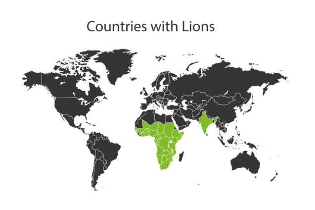
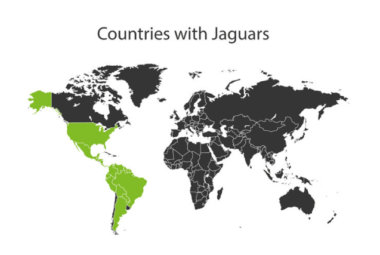

Latest Articles
Lion


Common Name : Lion
Scientific Name : Panthera leo
Lifespan : 12-18 years
Conservation Status :Vulnerable
Distribution :Lion populations exist in almost all sub-Saharan Africa countries with smaller populations found in the more fertile regions of Sahara countries. The endangered Asiatic Lions can be found in Rujapat, India of which there are around 600 individuals.
Jaguar


Common Name : Jaguar
Scientific Name : Panthera onca
Lifespan : 15 years
Conservation Status :Near threatened
Distribution :Found mostly in the Amazon rainforest with highest concentrations living in the Brazilian Pantanal. The species stretch- es from the very southern tip of the United States down to northern Argentina.
Snow Leopard

Common Name : Snow Leopard
Scientific Name : Panthera uncia
Lifespan : 15-18 years
Conservation Status :Vulnerable
Distribution :Found in the higher and mountainous regions of 12 different countries including including China, Bhutan, Nepal, India, Pakistan, Afghanistan, Russia, and Mongolia. Population is most dense in the eastern Himilayas.
Tiger

Common Name : Tiger
Scientific Name : Panthera tigris
Lifespan : 20-26 years
Conservation Status :Endangered
Distribution :Five subspecies range across a broad variety of habitats from the freezing Siberian tundra to the tropical rainforests of Sumatra.
Cheetah